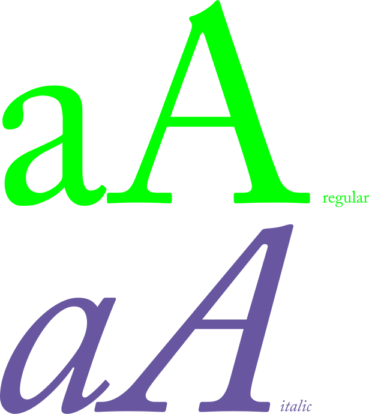

Adobe Caslon Pro

Le Caslon inclut les variations de régularité qui sont typiques des polices hollandaises transitionnelles ba- roques.
“De eer van een land is zijn karakter”
Proverbe hollandais
Il se caractérise par des jambages plutôt courts, des em- pattements pentus, un contraste relativement modéré, une texture robuste, et une modulation dis- crète des traits.
Spécimen de caractères
Adobe Caslon Pro Regular 45pt
Adobe Caslon Pro Italic 45pt
Adobe Caslon Pro Medium 45pt
Adobe Caslon Pro Medium Italic 45pt
Adobe Caslon Pro Bold 45pt
Adobe Caslon Pro Bold Italic 45pt
Adobe Caslon Pro Black 45pt
Adobe Caslon Pro Black Italic 45pt
Essaie-moi
The brown fox jumps over the lazy dog.